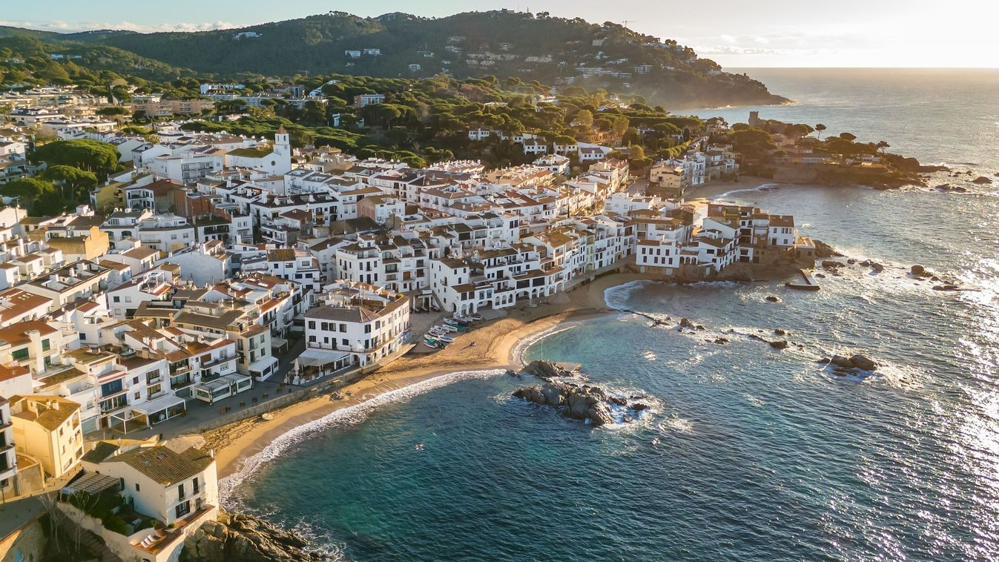
Costa Brava

Peñón de Ifach
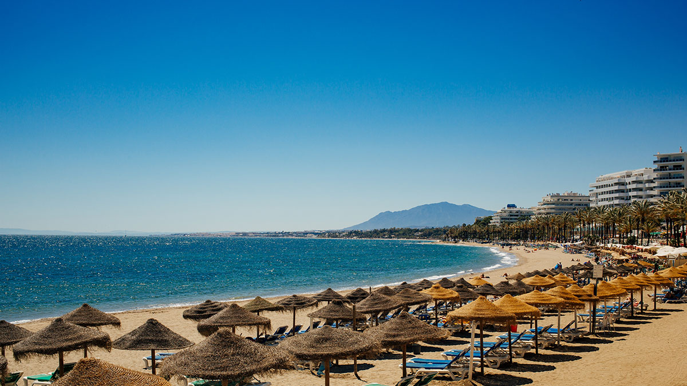


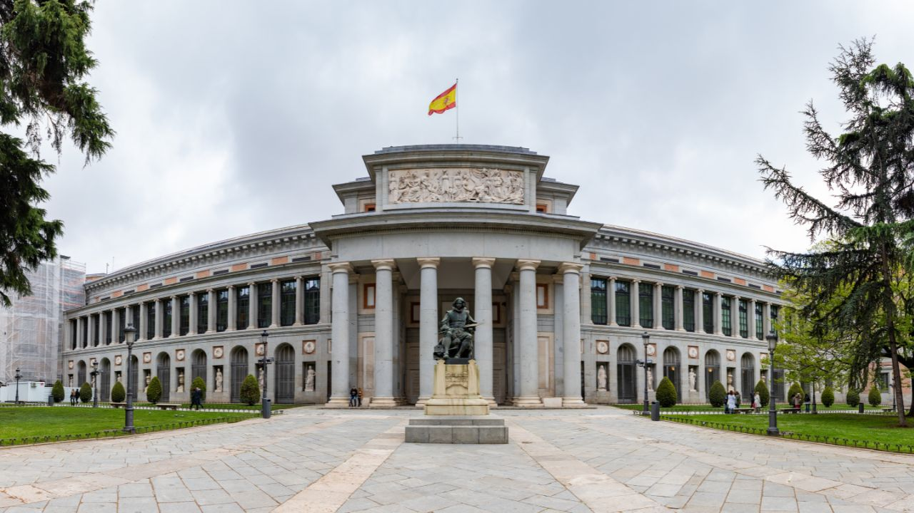
Velázquez, Goya és El Greco művei miatt kihagyhatatlan.
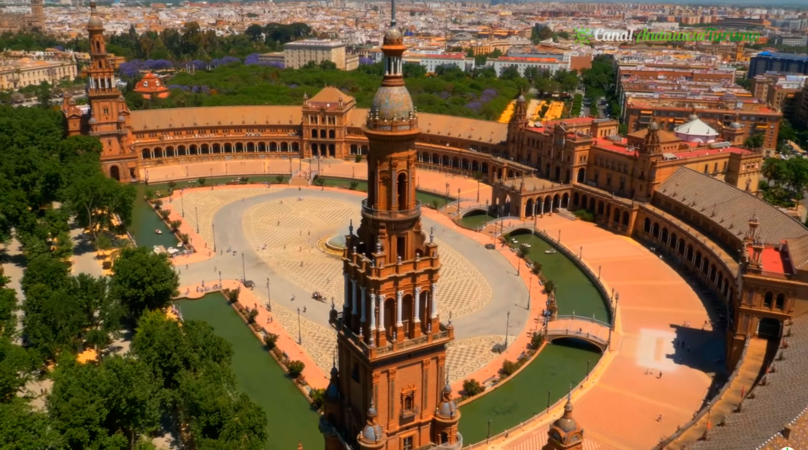
Monumentális tér csatornával és hidakkal.

Gaudí ikonikus bazilikája különleges fényjátékkal.
A barcelonai Sagrada Família a világ egyik legismertebb temploma, amelyet Antoni Gaudí tervezett. Az építkezés 1882-ben kezdődött, és a bazilika ma is épül. Gaudí egyedi, organikus stílusa jól megfigyelhető a részletgazdag homlokzatokon és a belső tér oszloperdején. A templom Barcelona jelképe, és évente több millió látogatót vonz.
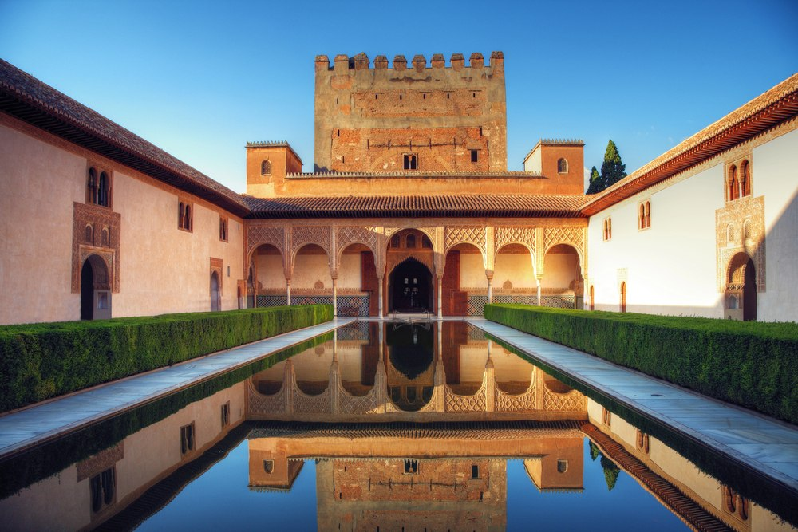
Díszes mór palotakomplexum Andalúziában.
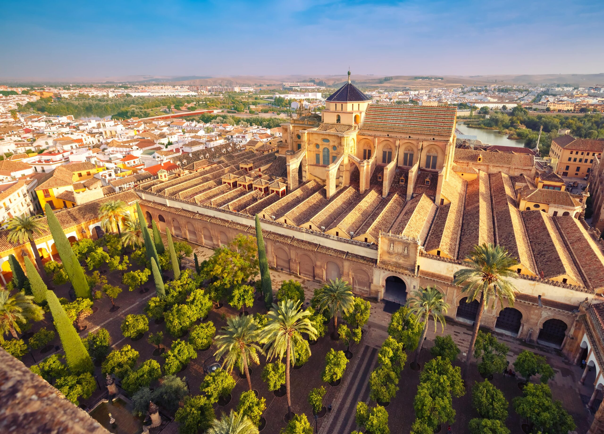
Mecset-katedrális vörös-fehér boltívekkel.

Futurisztikus komplexum múzeumokkal.
A valenciai Művészetek és Tudományok Városa egy futurisztikus kulturális és tudományos komplexum, amelyet többek között Santiago Calatrava tervezett. Az épületegyüttes része a Hemisfèric planetárium, az Oceanogràfic – Európa egyik legnagyobb akváriuma –, valamint az operaházként működő Palau de les Arts. A modern, ívelt formák és a vízfelületek látványos összhangja Valencia egyik legismertebb jelképévé tette a komplexumot.
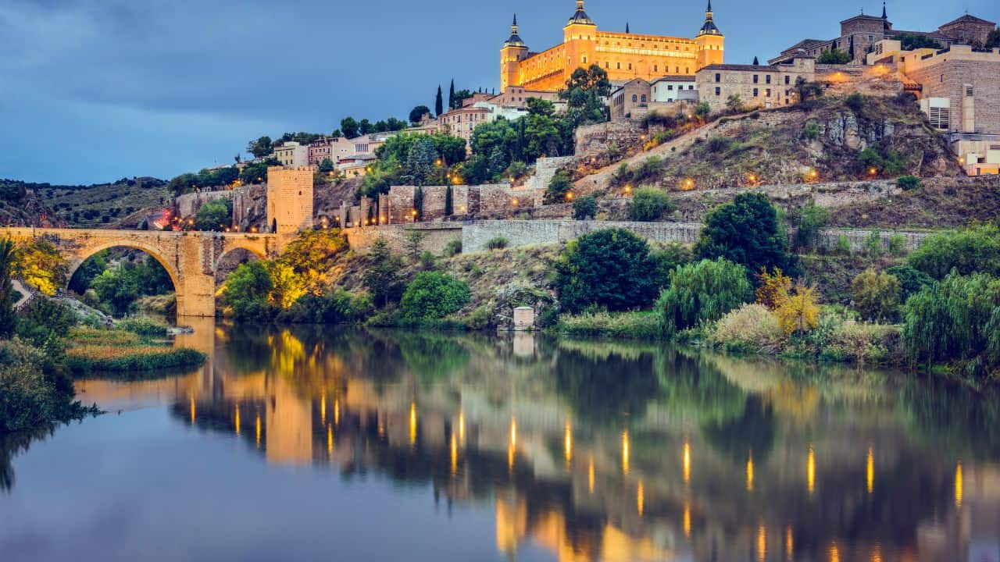
Középkori utcák és kulturális örökség.

Titánlemezes modern épület.
A bilbaói Guggenheim Múzeum a kortárs építészet egyik legismertebb alkotása, amelyet Frank Gehry tervezett, és 1997-ben nyitották meg. A titánlemezekkel borított, hullámzó formájú épület a Nervión folyó partján áll, és a város megújulásának szimbólumává vált. A múzeum modern és kortárs művészeti kiállításairól híres, és jelentős szerepet játszott Bilbao kulturális fellendülésében.
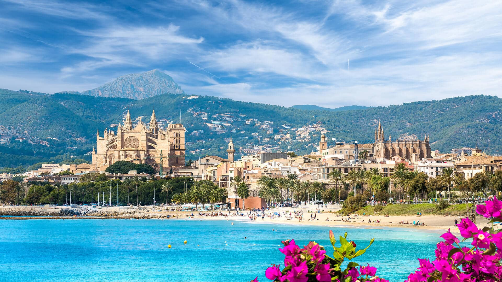
Gótikus katedrális a tengerpart közelében.
Az El Clickador egy Cookie Clicker-hez hasonló clicker játék, amiben a játékos célja, hogy kattintásaival minél több pontot szerezzen. A játékot akkor nyeri meg a játékos, ha elér egy bizonyos pontszámot(150.000).
Ahhoz, hogy megkönnyítse a nyeréshez szükséges pontszámhoz vezető utat, számos fejlesztés segít. Ilyenek például a pont(kattintás) szorzók, automata kattintók, kritikus kattintások, vagy a rage mód.
A játék kezdetében egy narancsot kell kattintgatni, viszont ez pontokért cserébe megváltoztatható, leváltható különböző féle bőrökre, például paella-, churros-, sombrero-, vagy flamenco bőrre.
Mivel a játék időigényes lehet, és unalmas, felturbóztuk néhány hangeffekttel is, hogy élvezhetőbb legyen mindenki számára. A játékhoz sok sikert kívánunk és jó szórakozást.
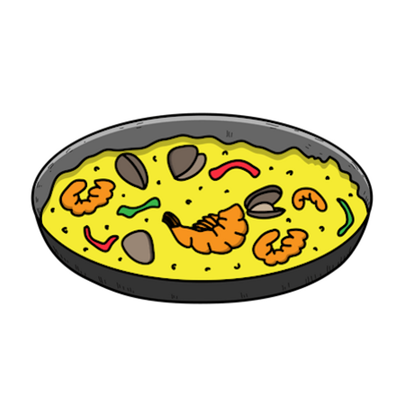
Paella bőr
Ár: 500p
Ár: 500p
Bika bőr
Ár: 750p
Ár: 750p
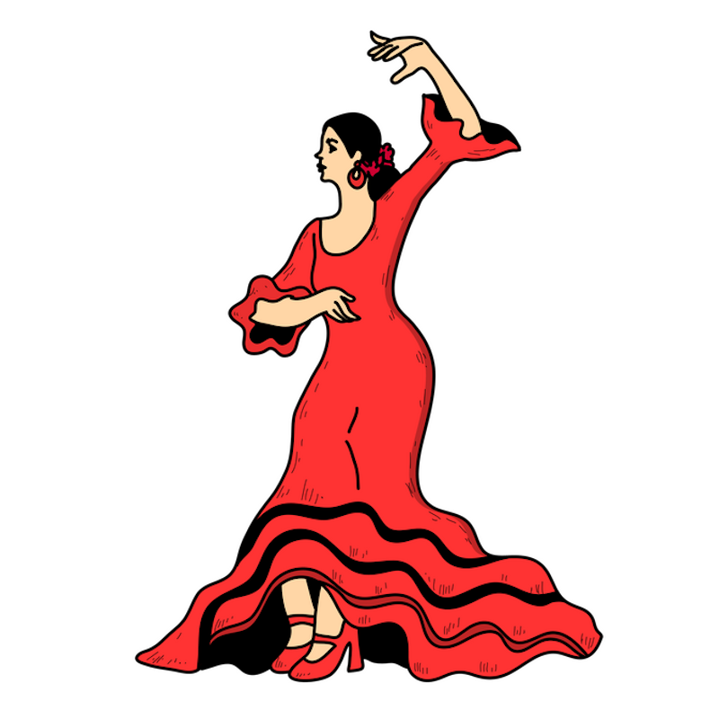
Flamenco bőr
Ár: 1000p
Ár: 1000p
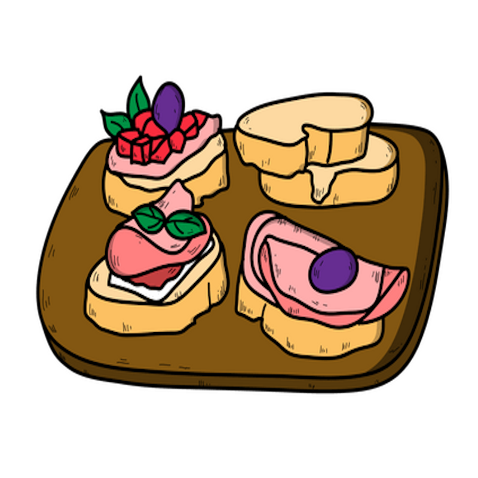
Tapas bőr
Ár: 1500p
Ár: 1500p
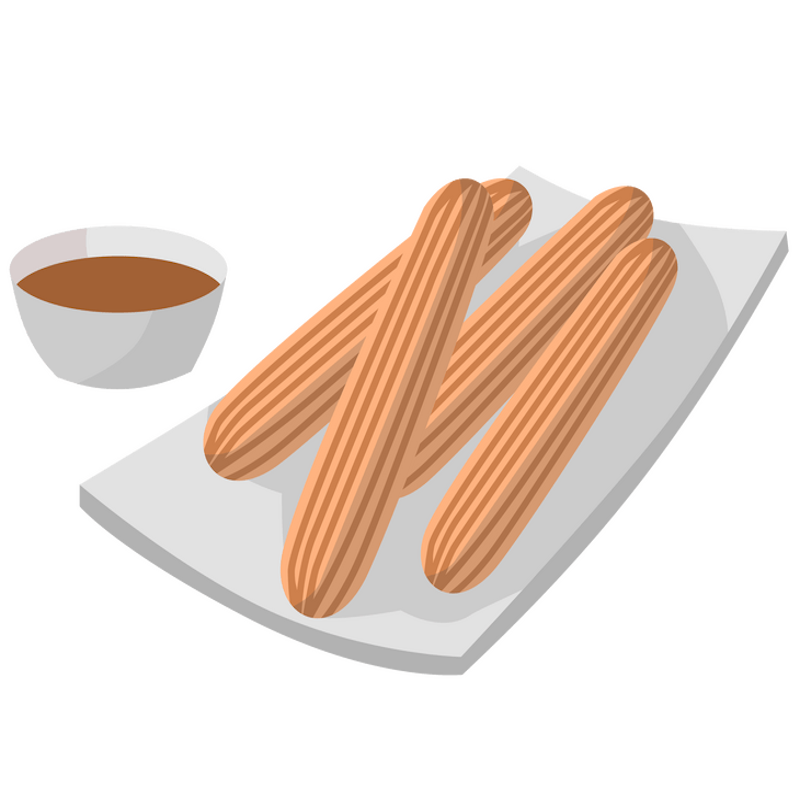
Churros bőr
Ár: 2000p
Ár: 2000p
Sombrero bőr
Ár: 20000p
Ár: 9999p
Pont szorzó: 1x
Ár: 6.7p Szint: 1
Pont szorzó
Ár: 6.7p
Auto kattintás: 15/s
Ár: 100p
Auto kattintás
Ár: 100p
Auto kattintás II: 50/s
Ár: 400p
Auto kattintás II
Ár: 400p
Kritkus esély: 0%
Ár: 150p Szint: 1
Kritkus esély
Ár: 150p
Rage fejlesztés:
Ár: 750p
Rage fejlesztés:
Ár: 750p
Némítás gomb:
Ár: 1000p
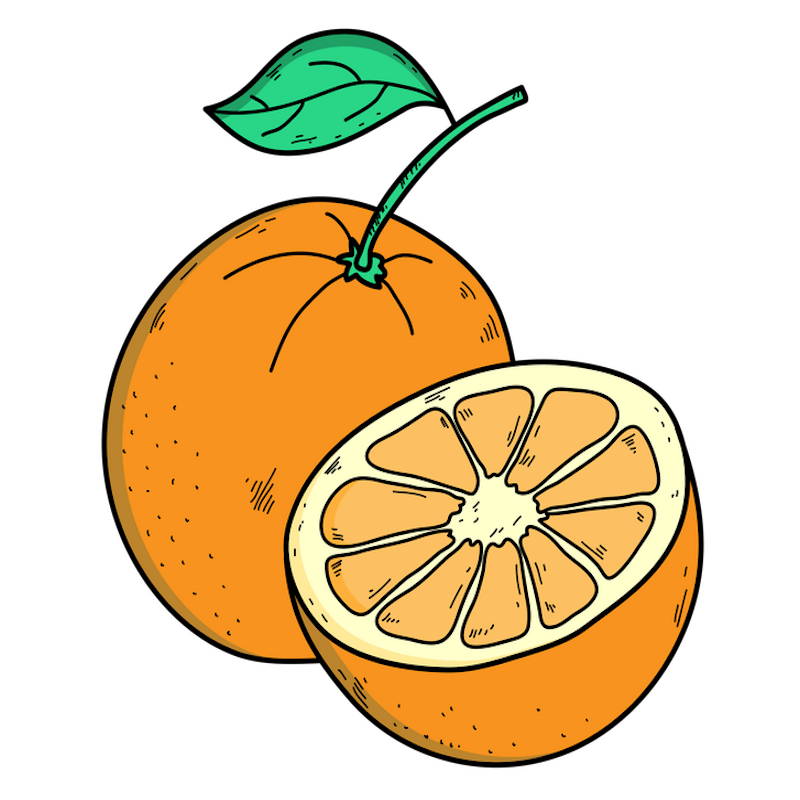
Még nincs feloldva!
Ár: 150000p